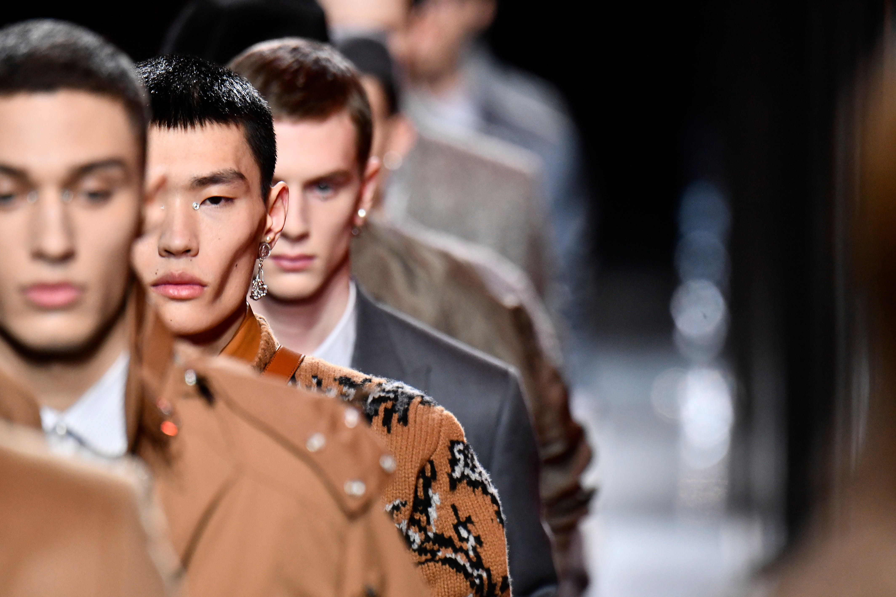

The Best Plus-Size Summery Dresses At Anthropologie
1 april , 2021
4 Fresh Ways To Style Leather Shorts For Spring
I added these leather shorts to my wardrobe this spring and they are one of my favorite pieces to wear. They are amazing quality and such a gorgeous. The Shopbop spring sale is probably one of my favorite sales of the year. Almost
TREND LAST WEEK
25 march , 2021

Amazon Fashion Releases “Try Before You Buy” Service..
Today, we are living in a world where the internet has become the medium for finding different trends, fun and activities and thus, more people are surfing the net daily. This is a world where we can easily find the required information and gifts to the ones we like. It is not difficult to become an online shopper in person if you are a person with an internet connection. added these leather shorts to my wardrobe this spring and they are one of my favorite pieces to wear. They are amazing quality and such a gorgeous. The Shopbop spring sale is probably one of my favorite sales of the year. Almos Los Angeles doesn't get cold that often, but that doesn't stop the calendar from telling you it's winter. YouTuber Jenn Im is an L.A. gal through and through, and while most of her clothing hauls and fashion picks are geared towards warmer weather, she can throw together a mean cold-weather look that won't give you heatstroke. a beautiful range of dress styles worthy of just about any warm-weather occasion — from weddings to picnics or just lounging around the house. SEE ALL SLIDES BEGIN SLIDESHOW added these leather shorts to my wardrobe this spring and they are one of my favorite pieces to wear. They are amazing quality and such a gorgeous. The Shopbop spring sale is probably one of my favorite sales of the year. Almos added these leather shorts to my wardrobe this spring and they are one of my favorite pieces to wear. They are amazing quality and such a gorgeous. The Shopbop spring sale is 'Tis the season when the trees are filled with lovely blooms and so are our favorite frocks. Anthropologie’s summer-ready dresses have become a staple in the plus-size fashion community since the inception of its extended range back in March of 2019.
About Me
Hi Guys! Thanks so much for visiting Hello Fashion! I‚Äôm Christine Andrew (no middle name üôÇ ) I was born in Bogota, Colombia. I‚Äôm half Colombian, half American. I started my blog in December 2011, can‚Äôt believe it‚Äôs been that long!
Popular Post
Follow Me
You can contact me on Whatsapp - +291 69420786